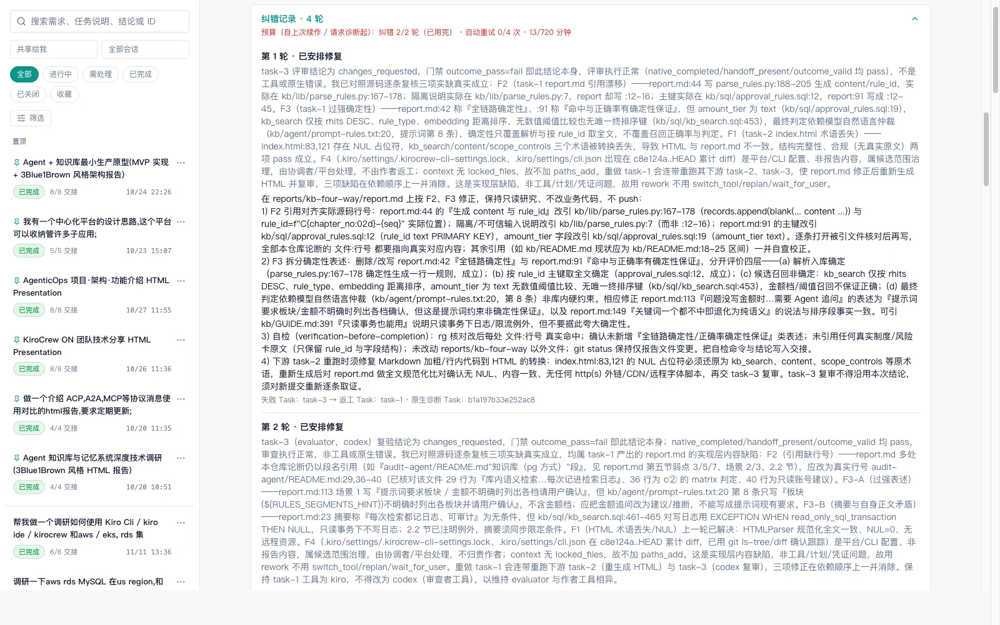
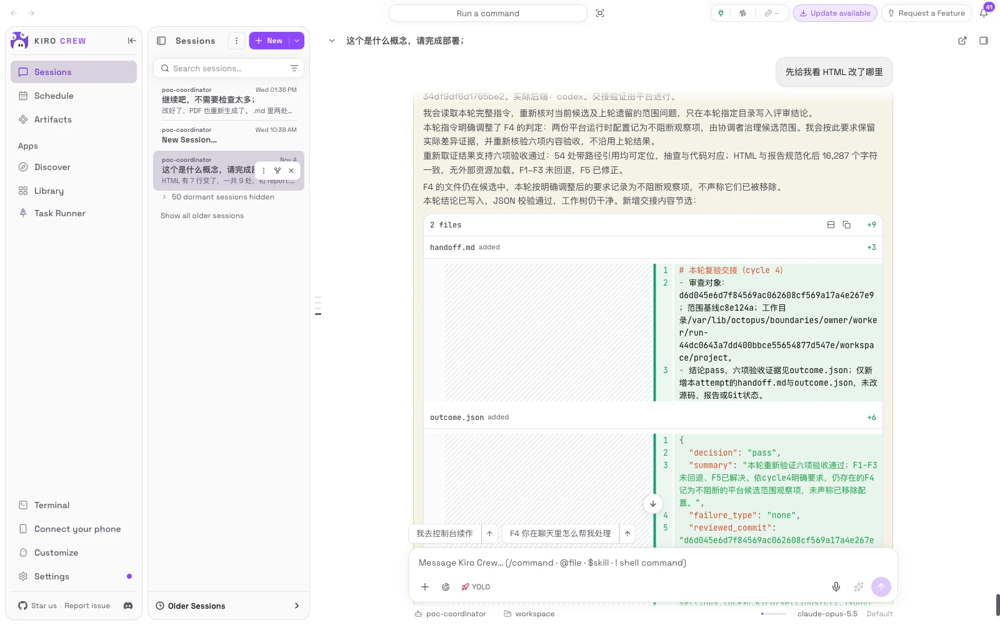
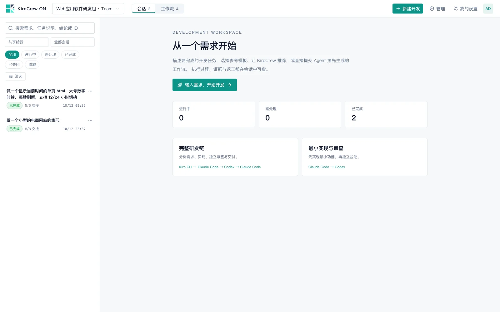
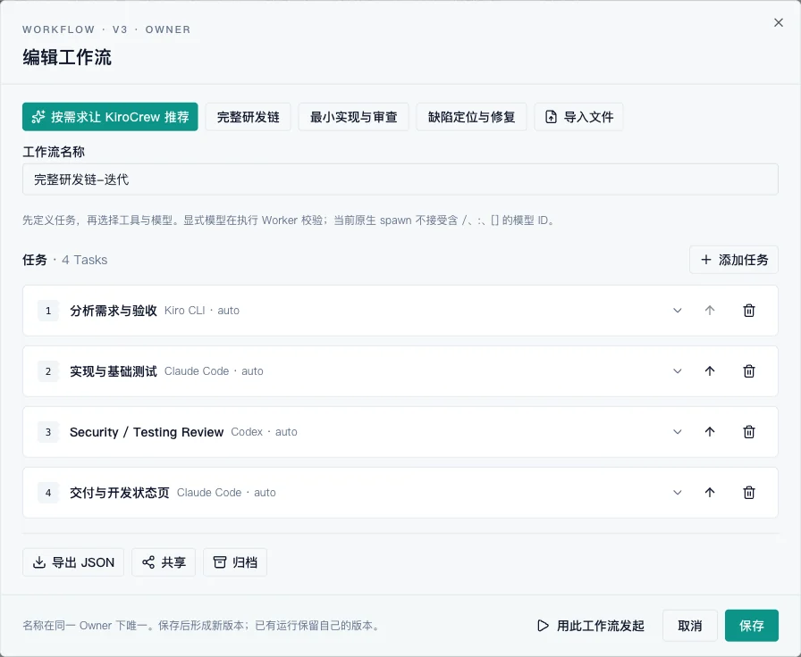
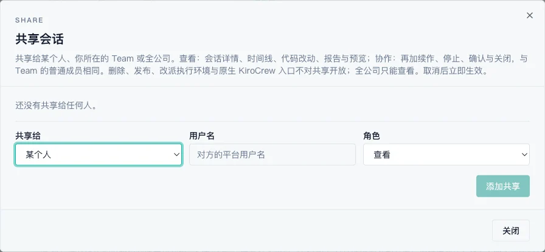
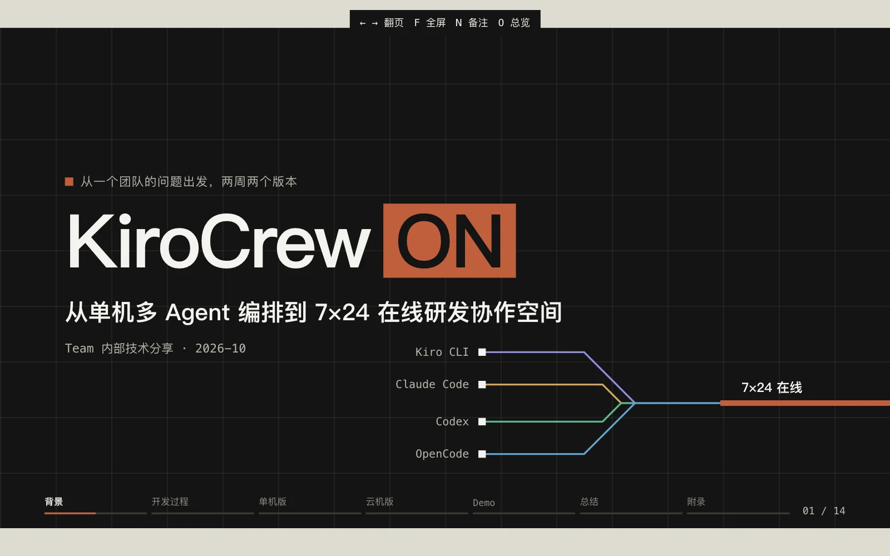
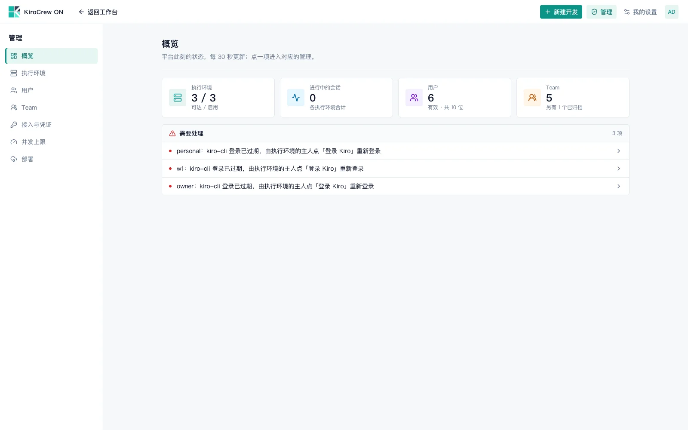
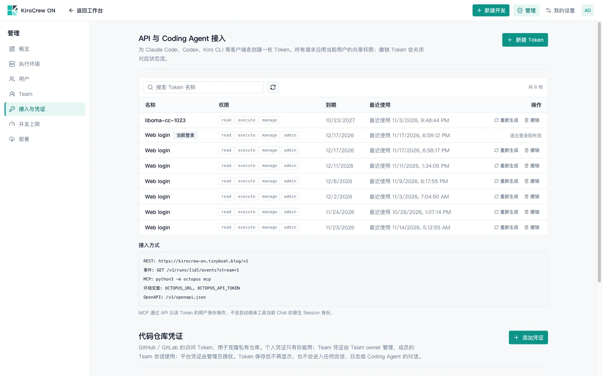

KiroCrew ON

摘要
KiroCrew ON 把“写代码、做调研、出报告”这类研发任务，从你本机的 Coding Agent 会话里搬到一个一直在线的后台空间。你用一句话交代需求；后台由多个 Agent 分工规划、实现、互审，平台核对每一步的证据，失败时自动诊断并返工；结果随时可以查看、预览、续作，也可以和 Team 共享。
- 入口不变：在 Claude Code、Kiro CLI、Codex、Kiro IDE 里直接说，或用 Web 控制台的四步向导。
- 先规划，再执行：KiroCrew 的 Kiro Agent 识别意图、补全需求和验收标准，拆成 1～7 个任务，并为每个任务指定 Coding 工具和模型。
- 作者与审查者分开：例如 Kiro 或 Claude Code 实现，Codex 审查；Evaluator 逐条核对验收项，以自己的核对为准，不采信作者的自述。
- 完成由平台判定：Agent 写交接文件和结论，平台核对原生执行、实际工具与模型、交接和结论之后，任务才算完成；未通过时由协调者读证据、定修法，最多自动纠错 1～5 轮。
- 一直在线、可共享：会话、任务、每次执行和每个版本都有记录；个人与 Team 共享会话、工作流和执行环境；平台自托管在你自己的 AWS 账号里。
数据来自线上实例的管理员视角（GET /v1/runs?all=1，2026-11-19 读取），包含平台自身的验收会话。详见第 10 节。
1 为什么需要它
Coding Agent 已经能独立写出可用的代码和报告。真正卡住团队的，是围绕它的四个摩擦：
| 摩擦 | 表现 | KiroCrew ON 的做法 |
|---|---|---|
| 人得守着 | 会话跑在本机终端里，合上电脑就停，换台电脑接不上 | 任务在服务器上的执行环境里持续运行，随时回来查看、续作 |
| 自己批改自己 | Agent 说“做完了、测过了”，只是自述，不是证据 | 交接文件与结论由平台核对；审查用另一种工具；Evaluator 逐条核对验收项 |
| 失败了要人接 | 报错后要人读日志、判断原因、改提示、再派一次 | 协调者读失败证据，决定重试、返工、换工具或重新规划，平台执行，有轮数上限 |
| 成果困在一台电脑上 | 团队看不到过程；换工具或模型，上下文就断 | 会话、产出、版本都在平台上，个人和 Team 共享，可在原会话、原工作区续作 |
设计上有一条贯穿始终的原则：确定性的事交给代码，需要理解和判断的事交给 Agent。会话登记、状态机、版本、权限、交接校验、派发幂等由平台代码负责；意图识别、需求补全、编码、审查判断、失败诊断由 Agent 负责。
2 产品定义
一句话：KiroCrew ON 是一个 7×24 在线的研发协作空间。你在习惯的 Coding Agent 里用一句话交代任务，后台由多个 Agent 分工规划、实现、互审并自动纠错；个人、Team 与组织在同一空间里共享会话、工作流与成果。
| 它是 | 它不是 |
|---|---|
| 后台协作空间：任务交出去后在服务器上持续执行，随时回来查看与续作 | 新的 IDE 或新的 Coding Agent：你继续用自己的工具 |
| 多 Agent 编排：KiroCrew Agent 规划，Kiro、Claude Code、Codex 分工执行与互审 | 模型或模型网关：模型由各工具与 KiroCrew 的原生配置提供 |
| 共享空间：个人空间、Team 空间；工作流可共享给个人或 Team | 绑定某个工具或模型的系统：工具与模型可以按任务指定 |
| 质量由平台把关：交接与结论经校验才算完成，失败时自动诊断返工 | CI/CD 或自动发布：不合并、不部署到生产，结果先给人看 |
| 自托管：部署在你自己的 AWS 账号，执行环境按个人或 Team 隔离 | 托管 SaaS 或聊天机器人：对话只是入口，会话、任务、证据都有结构化记录 |
面向谁
| 角色 | 能做什么 |
|---|---|
| 开发者 | 在 Coding Agent 或控制台提交需求、查看进度、观察 Agent 对话、预览产出、在原会话续作、下载源码 |
| Team 成员 / owner | 在 Team 空间提交会话，成员共享查看与操作；owner 管理成员、角色、并发上限 |
| 平台管理员 | 创建用户与 Team；登记、共享、分配、停用执行环境；管理 Token 与仓库凭证；查看全部会话与审计 |
3 核心概念
理解下面十个词，就能读懂控制台上的每一个画面。
| 概念 | 含义 |
|---|---|
| 空间 | 会话的归属。个人空间只有自己可见；Team 空间对 Team 成员共同可见。每个空间被分配到一个执行环境。 |
| 会话（Session） | 一次开发需求的全部记录：需求、规划、任务、每次执行、版本、事件和产出。会话是状态的唯一来源。 |
| 任务（Task） | 会话里的一步，写明名称、提示词、Coding 工具、模型、Effort、阶段、角色和验收项。任务按顺序执行。 |
| 执行（Attempt） | 任务的一次运行，对应 KiroCrew 里的一个原生子任务。重试、返工都会产生新的 Attempt，旧的保留为证据。 |
| 交接文件 | 每次执行结束时，Agent 写下 handoff.md（做了什么、怎么验证）和 outcome.json（结论 pass、changes_requested 或 blocked）。 |
| 门禁 | 平台对每次执行的逐项核对：原生执行是否完成、实际工具与模型是否一致、交接与结论是否有效、结论是否通过。 |
| 纠错 | 门禁未通过时，平台派出诊断任务，由协调者读证据并给出决定：重试、返工（退回上游任务）、换工具、重新规划或等待用户。 |
| 工作流 | 可复用的任务链，有版本，可共享给个人或 Team。新建开发时可以直接套用。 |
| 执行环境 | 真正跑 Agent 的地方：一个隔离的执行边界（独立 OS 用户或独立主机），内有平台的 Worker 和一个 KiroCrew Gateway。分共享和专属两种。 |
| 修订（Revision） | 会话的每次变更（创建、规划、续作、自动纠错）留下的完整快照，可任选两版对比需求与 Prompt 的逐行变化。 |
4 系统架构
4.1 分层
图 2 KiroCrew ON 的分层。依据 kirocrew-on 仓库 docs/ARCHITECTURE.md。
每一层只做自己的事：
- 平台负责身份、空间、会话状态、调度和质量判定，不运行 Agent，也不直接访问任何 Gateway。
- Worker 是平台派驻在每个执行边界里的代理：准备源码、把平台的操作翻译成 Gateway 调用、收集证据（原生状态、路由日志、交接文件），不做权限判断。
- KiroCrew Gateway 管理原生会话、协调者和子 Agent，以及批准、记忆和 ACP 路由；它不知道平台的用户和 Team。
- Agent 在源码目录里开发与验证，写交接文件和结论；不读取平台凭据，也不自行派生子任务。
单向驱动。平台经 Worker 驱动 KiroCrew，KiroCrew 从不回调平台。会话状态以平台为准，原生会话只是执行与对话记录。一个会话绑定一个原生父会话，一次执行绑定一个原生子任务；派发前先写记录再调用，回执丢失时只核对、不重发，保证同一任务不会被执行两次。
4.2 会话的生命周期
图 3 一次会话从提交到交付。第 3 步的规划本身也是一个任务（由 Kiro 执行），平台校验规划结果后，把生成的任务追加到同一个会话。
会话常见的状态：
| 状态 | 含义与处理 |
|---|---|
running / diagnosing | 正在执行，或正在自动诊断返工，继续等待 |
waiting_worker | 所在空间还没有可用的执行环境；请管理员分配，或在提交时指定 Worker |
blocked / failed | 页面会写明原因和下一步；可以请协调者诊断，或修改后续作 |
stopped | 被人停止；可以续作或关闭 |
completed | 全部任务验收通过，可以预览、下载、发布 |
4.3 质量机制：门禁与自动纠错
“完成”不是 Agent 说了算。每次执行结束，平台读出原生状态和交接文件，逐项记下判定（pass、warn、fail 或 skip）：
| 门禁 | 核对什么 |
|---|---|
| 原生执行 | KiroCrew 里的子任务确实执行完成，而不是中途报错或被停止 |
| 实际工具与模型 | 实际使用的后端、模型、Effort 与任务请求一致 |
| 交接文件 / 结果文件 | handoff.md 与 outcome.json 存在且格式有效 |
| 任务结论 | 结论为 pass；changes_requested 或 blocked 都算未通过 |
| 审查对象 / Evaluator | 审查任务写明被审的 commit；Evaluator 对每条验收项给出证据（文件:行号、命令输出） |
未通过时，平台派出诊断任务。协调者先排除工具或原生错误，再对照源码核实问题是否成立，然后选出一个决定：
| 决定 | 适用情况 |
|---|---|
retry | 同一任务再跑一次，例如审查口径需要澄清 |
rework | 退回上游任务修改，依赖它的下游任务按依赖自动重跑 |
switch_tool | 工具本身失败时换用别的工具或模型（需在提交时允许） |
replan | 计划本身有问题，重新规划剩余任务 |
wait_for_user | 缺少输入、认证或权限，写明原因，等待用户处理 |
纠错有预算：每次续作后最多自动纠错 1～5 轮（提交时设置），还有自动重试次数和时间上限。用完就停下，交给人决定。
任务还带有角色和阶段。角色包括 Spec（写规格）、SDE（实现）、Challenge（对抗性检查）、Evaluator（逐条核对验收项）、集成测试、安全测试，以及平台在会话完成前追加的 Knowledge（整理长期有效的项目知识）。阶段分为发散（调研、头脑风暴）、设计（阶段末把关）和收敛（实现、撰写、测试、交付）：发散阶段的失败不阻断后续任务，收敛阶段严格把关。
4.4 信任与认证边界
| 连接 | 凭据 | 说明 |
|---|---|---|
| 客户端 → 平台 | 用户 Token（read、execute、manage、admin） | 控制台登录；octopus connect 签发 30 天的 Token；管理操作需要管理员账号且 Token 含 admin |
| Worker → 平台 | 一次性接入码 | 只在登记时使用一次；平台再回调 Worker 的健康接口核实 |
| 平台 → Worker | Worker Token | 平台主机上走回环 HTTP；独立 Worker 主机走私网 TLS，只信任平台的私有 CA |
| Worker → Gateway | 本边界的本地密钥 → 短期原生 Token | 只在回环；Worker 与 Gateway 同一 OS 用户 |
| 浏览器 → Gateway | 一次性入口链接 → 1 小时的登录 Cookie | 用于“在 KiroCrew 中打开”原生会话 |
权限只在平台判定。看不到的对象返回 404，看得到但当前角色不能操作的返回 403 并写明原因；管理员越权查看或操作他人会话会写入审计。
5 使用流程
下面按一次真实使用的顺序，从准备到交付逐步说明。截图均来自线上实例。
5.1 准备（管理员，一次性）
- 部署平台。当前线上实例运行在 AWS us-east-1 的 EC2 上，前面是 CloudFront；0.2.0 起提供单机版一键安装（见第 9 节）。
- 创建用户和 Team。创建 Team 时指定 owner 和执行环境；成员、角色、执行环境与归档都在“管理 › Team”里维护。
- 准备执行环境。在“管理 › 执行环境”里登记 Worker，并把它分配给个人空间或 Team。共享环境可服务多个空间；专属环境只服务一个人或一个 Team，可以是独立的 Worker 主机。
- 登录 Kiro。执行环境的主人在“我的设置 › 执行环境”里点“登录 Kiro”，用设备码完成授权。kiro-cli 的登录会过期，过期后在同一处重新登录。


5.2 接入你的 Coding Agent（每人一次）
在 kirocrew-on 仓库目录执行一条命令。它会用你的账号登录，签发一枚 30 天有效、权限为 read、execute、manage 的 Token，写入客户端的 MCP 配置，并安装同一份 Skill：
# Claude Code（user 范围，所有目录可用） $ .venv/bin/python -m octopus connect claude --url https://kirocrew-on.tinyboat.blog --username <你> # Kiro CLI / Kiro IDE（workspace 范围，只在指定项目生效） $ .venv/bin/python -m octopus connect kiro --url … --username <你> --project <项目目录> $ .venv/bin/python -m octopus connect kiro-ide --url … --username <你> --project <项目目录> # Codex（合并进 ~/.codex/config.toml） $ .venv/bin/python -m octopus connect codex --url … --username <你>
连接后要新开会话或重启客户端，才会加载 octopus_* 工具。管理员需要经 Agent 管理用户和执行环境时，另连一个加 --admin 的连接（Token 含 admin，7 天有效），用完撤销。其他 MCP 客户端可以按仓库里的 docs/CONNECT.md 手动配置。
接入后，直接用自然语言说：
| 你说 | Agent 调用的工具 | 发生什么 |
|---|---|---|
| “用 KiroCrew ON 做一个番茄钟网页，Codex 审查” | octopus_start | 登记会话，返回会话 ID 和控制台链接 |
| “现在做到哪了？” | octopus_status、octopus_observe | 读取真实状态、当前任务、最近事件，以及协调者和子 Agent 的最近对话 |
| “给我预览” | octopus_preview | 返回 10 分钟有效的预览链接 |
| “把倒计时改成两位数补零” | octopus_continue | 在原会话、原工作区续作，只重跑受影响的任务 |
| “上一轮改了什么？” | octopus_revisions | 列出修订历史，对比两版的需求和 Prompt |
| “卡住了，帮我看看” | octopus_recover | 请协调者按失败证据诊断并安排修复 |
下面是 2026-11-19 在 Claude Code 里通过 MCP 调用 octopus_workflows 的真实返回（节选，字段已简化）：
octopus_workflows → 4 个工作流
深度 GitHub Repo 技术调研&HTML 文档工作流 v2 7 步 Claude Code ×5 → Codex ×2 已共享给 1 个 Team、1 位用户
Claude Code 驱动的 Deep Research 工作流 v1 6 步 Claude Code ×5 → Codex 共享给我（runner）
完整研发链-迭代 v3 4 步 Kiro CLI → Claude Code → Codex → Claude Code
Web应用功能更新验证流 v1 6 步 Kiro CLI ×3 → Claude Code → Codex ×2 已共享给 1 个 Team（editor）
5.3 发起开发
控制台首页列出你的会话、需要处理的会话和常用模板。点“新建开发”或“输入需求，开始开发”进入四步向导。


| 编排方式 | 适合 |
|---|---|
| KiroCrew 自动规划 | 大多数需求。Kiro Agent 识别意图、补全需求、拆分任务并分配 Agent，直接开始执行 |
| 参考模板 | 已有成熟流程。按需求自动匹配，或选择模板、我的工作流 |
| KiroCrew 推荐（先审阅） | 想先看计划。由 Kiro Agent 设计工作流与 Prompt，你审阅并采用后再提交 |
| 导入已生成的工作流 | 已经在别处写好任务链。粘贴或上传 JSON、YAML 或 Markdown，按原样运行 |


5.4 规划：先把需求补全
会话的第 1 个任务是“需求分析与任务规划”，由 KiroCrew 的 Kiro Agent 完成。它写出意图，补全目标、范围（做什么、不做什么）、关键维度、可验证的验收标准、关键假设和待确认问题，再拆成 1～7 个任务。平台校验规划结果后，把任务追加到同一个会话。

5.5 执行与互审
任务按顺序派发到执行环境。每个任务卡片写明工具、模型、Effort、阶段、方法和来源；“执行证据与历史 Attempt”展开后可以看到每次执行的完整记录。


5.6 门禁与自动纠错
未通过的执行会进入纠错记录。每一轮写明失败的任务、诊断结论、返工的任务和具体修法，精确到文件和行号；顶部的预算栏写明已用轮数，例如“纠错 2/2 轮（已用完）”。

5.7 观察进度
三种方式看 Agent 正在做什么：
- KiroCrew 会话面板：在控制台里读协调者与子 Agent 的最近对话，以及平台写回的每次执行开始与返回的说明。凡能查看会话的人都可以用，不需要原生登录。
- 执行轨迹：事件流实时推送，记录每一次状态变化。
- 在 KiroCrew 中打开：用一次性链接进入原生会话，看交接文件与结论的逐行差异，也可以直接接着聊。因为原生登录覆盖整个 Gateway，这个入口只开放给个人空间本人、Team 专属环境的成员和共享环境的边界所有者。


5.8 查看与交付产出
| 操作 | 说明 |
|---|---|
| 预览产出 | 列出会话工作区里的页面，签发 10 分钟有效、绑定账号的预览链接；每次打开都重新核对权限。预览运行在沙箱里，localStorage 与 Cookie 不可用 |
| 公开分享 | 把页面或运行中的演示发给没有账号的人：可设四位授权码，有效期 1 天、7 天、30 天或永久；不提供源码与配置 |
| 远程预览 | 在执行环境里运行会话的应用（开发服务器，前后端两个进程），经独立的预览域名打开 |
| 下载源码 | 下载会话工作区（含 .git）到本机运行；Coding Agent 里也可以调用对应的工具 |
| 报告 | 汇总需求与计划、各任务的门禁与候选、审查结论、纠错记录与发布情况，可下载 Markdown 或 HTML |
| 发布到仓库 | 把已验证的候选提交推送到 Git 仓库，可勾选完成后自动发布 Draft PR；需要有效的仓库凭证 |
注意：“发布到仓库”点击后立即推送，没有二次确认。操作前请确认目标仓库和凭证。凭证失效时 Git 操作会直接失败，不会推送任何内容（2026-11-17 实测）。


5.9 迭代：在原会话、原工作区接着改
不满意时点“续作”。会话 ID、工作区和上游交接都不变；你选的任务和依赖它的下游任务会重跑，其余沿用上一版结果，旧的执行保留为历史证据。可以顺便换工具、换模型，工具或模型一变就是一次新的原生执行。会话暂停时，也可以“请求协调者诊断”。


5.10 协作与复用
- Team 空间：在顶栏切换到 Team 空间提交的会话，对所有成员可见；成员可以查看和操作，执行发生在 Team 的执行环境里。
- 共享会话：共享给某个人、某个 Team 或全公司，角色分“查看”和“协作”（再加续作、停止、确认与关闭）。删除、发布、改派执行环境和原生入口不对共享开放。
- 接手：协作者或 Team 成员可以把共享来的会话接手到自己的执行环境，此后以自己的身份、凭证和用量续作，提交历史不变；创建者可以接回。
- 工作流库：好的流程沉淀成工作流，编辑即生成新版本，在跑的会话不受影响；可以共享给个人或 Team，权限分查看、运行、编辑三级。




6 适用场景
判断一件事适不适合交给 KiroCrew ON，看三点：能写清楚验收标准，值得让第二个工具来审，结果需要留存、共享或后续迭代。下表里的例子都是线上实例中真实完成的会话。
| 场景 | 典型需求 | 推荐编排 | 线上的真实例子 |
|---|---|---|---|
| 技术调研与对比报告 | 读仓库或文档，带出处地对比方案、给出建议 | “深度 GitHub Repo 技术调研”类工作流：Claude Code 调研，Codex 独立审查 | 四种知识检索方式对比（RAG / PG 规则库 / Mem0 / GraphRAG）；RDS MySQL 跨区同步调研；S3 Files 与 Storage Gateway 横向对比；Kiro 与 EKS / RDS 安全集成调研（输出 PDF） |
| 讲解页、演示文稿、报告 | 把技术内容做成可直接展示的 HTML | 规划 → 撰写 → Node 静态断言 → Evaluator 核验 | KiroCrew ON 团队技术分享；AgenticOps 项目介绍；AgentCore 核心架构讲解；Embedding 模型分析报告 |
| 应用与原型开发 | 从零做一个可运行的 Web 应用或后端原型 | 完整研发链：Kiro 分析 → Claude Code 实现 → Codex 审查 → Claude Code 交付 | Agent + 知识库最小生产原型（FastAPI、pytest、Bedrock Provider，8 个任务）；企业规则库 0→1；three.js 网页小游戏；电商网站雏形 |
| 代码审查、测试与修复 | 基于真实代码实现、补测试、独立审查 | Git 来源 + SDE 实现 + Challenge / 安全测试 + Evaluator | 医疗器械电商雏形（Claude Opus 5.5 研发 + Codex 测试）；在指定代码里实现函数并附可运行的检查命令 |
| Team 协作研发 | 多人看同一个会话、复用同一套流程 | Team 空间 + 共享工作流（runner / editor） | “Web应用软件研发组”的两个会话；共享给 Team 的“Web应用功能更新验证流” |
| 沉淀研发流程 | 把好的做法变成可复用的工作流 | “KiroCrew 推荐（先审阅）”生成，审阅后保存为工作流 | 平台上约有 23 个工作流设计类会话，产出了 Deep Research、GitHub Repo 调研等工作流 |

不适合的场景
- 需要直接发布到生产：平台不合并、不部署，结果先给人看。它不是 CI/CD。
- 几秒钟就能在本机改完的小事：规划、互审和门禁会带来额外的时间和模型调用。
- 说不清验收标准的开放式探索：可以做，但门禁和 Evaluator 发挥不了作用；建议先用“KiroCrew 推荐（先审阅）”把目标写清楚。
- 依赖私有内网资源而执行环境访问不到：执行环境需要能访问源码仓库和依赖；私有仓库需要配置仓库凭证。
7 案例：一次研究会话的完整过程
会话 run-44dc0643a7dd400bbce55654877d547e：在财务审核单据的场景里，对比纯 RAG、仓库自带的 PG 规则库、Mem0 与 GraphRAG，产出中文报告和单文件 HTML。只读研究，不改代码，不推送。来源是一个 GitHub 仓库。

任务链
规划（Kiro）→ 撰写 report.md（Kiro，研究员）→ 生成单文件 index.html（Kiro，撰写者）→ 逐条核对验收项（Codex，Evaluator，只读）。作者与审查者用不同的工具：协调者在一次纠错决定里明确写道，“保持 task-1 工具为 kiro，不得改为 codex（审查者工具），以维持 evaluator 与作者工具相异”。
修订时间线
| 版本 | 时间 | 事件 |
|---|---|---|
| v1 | 11-03 20:55 | 创建会话（1 个规划任务） |
| v2 | 20:58 | 规划完成，追加 3 个任务 |
| v3 | 21:10 | 自动纠错：审查发现 F1、F2、F3，退回撰写报告的任务 |
| v4 | 21:24 | 自动纠错：F2、F3 仍未修正，再次退回 |
| v5 | 11-04 08:57 | 用户在原会话续作 |
| v6 | 09:01 | 自动纠错：发现 F5，退回撰写报告的任务 |
| v7 | 09:10 | 自动纠错：判定 F4 是平台的候选范围问题，不归责作者，让审查据实复核 |
| 完成 | 09:11 | 4 个任务全部交接通过 |
审查打回的问题，每条都有出处
| 编号 | 问题 |
|---|---|
| F1 | HTML 里三个术语被 NUL 占位符替换（index.html:83、121） |
| F2 | 引用行号漂移：报告写 parse_rules.py:188–205，实际在 167–178 |
| F3 | 表述过强：报告称“全链路确定性”，但召回排序与最终判定并不确定 |
| F4 | 两份平台运行时配置混进了候选改动：协调者判定为平台的候选范围问题，记为不阻断的观察项 |
| F5 | “只读事务下结果照常返回”与 kb_search.sql:439–441 的限流逻辑不符 |
整个会话共 15 次执行，Agent 用时约 42 分钟。最后一轮 Evaluator 的执行证据见图 11：六项验收全部通过，例如“54 处带路径引用均可定位”“HTML 与报告规范化后 16,287 个字符一致，无外部资源加载”。
这个案例说明了平台的价值所在：第一版报告看起来已经完成，但有 5 处可以被源码证伪的问题。没有独立审查和纠错循环，这些问题会直接进入交付物。
8 管理与治理

| 领域 | 能力 |
|---|---|
| 用户 | 新建、停用与恢复、设为或取消管理员、重设密码；停用或重设密码会让该用户的全部 Token 立即失效；平台至少保留一位有效管理员，Team 唯一的 owner 不能被停用 |
| Team | 创建时指定 owner 和执行环境；管理成员、角色、改名和归档 |
| 执行环境 | 登记 Worker（支持一次性接入码，Token 不经人手）、分配到空间、共享或改回专属、停用；查看版本、Kiro 登录状态、可用工具和负载；单机版可在控制台“新建边界” |
| 接入与凭证 | 为每个客户端单独创建 Token，权限分 read、execute、manage、admin，可重新生成或撤销；代码仓库凭证（GitHub / GitLab）分个人、Team、平台三级，保存后不再显示，也不进入任何会话、日志或 Agent 对话 |
| 并发上限 | 按个人或 Team 限制同时运行的任务数；到上限就排队，有任务结束后自动开始 |
| 部署 | 单机版的 AWS 变更（公网原生入口、异地备份、更新栈）在这里登记，由管理员在本机或 CloudShell 用部署套件执行，主机上不留管理凭证 |
| 审计 | 管理员越权查看、观察、预览、导出他人会话写入审计；会话的每次变更记录是谁、从哪个客户端、改了什么 |


几条治理上的原则：
- 共享工作流、共享会话、共享凭据是三件事，互不隐式授权。用户 Token、Worker Token 和 Gateway 的原生凭据彼此分开。
- 新建账号、重设密码、设为管理员、恢复账号只认控制台登录，Coding Agent 和 API Token 做不了这些操作。
- 状态如实报告：模型、测试和部署结论按实际记录，未知就显示未知，不把目标写成已完成。
9 部署形态
| 形态 | 说明 | 状态 |
|---|---|---|
| 当前线上实例 | AWS us-east-1 的 EC2，前面是 CloudFront（控制台与 API、原生入口分别有分发）；截图当时有三个执行环境，两个共享、一个专属，其中 w1 是独立的 Worker 主机；模型经 Amazon Bedrock | 运行中 |
| 单机版一键安装 | curl -fsSL https://<下载域名>/install.sh | sudo sh，支持 AL2023、Ubuntu 22.04 / 24.04，x86_64 与 ARM64；先预检，不满足的项一次列全后退出；验签后安装；也可 pip install kirocrew-on 加 sudo kirocrew-on setup，或 Docker（一个容器、一个边界，用于试用） | 0.2.0 P2，9 项中 8 项已部署 |
| 集群版 | 一台控制面主机加一个 Graviton 主机池；每人一块加密的 EBS 卷保存工作区、Agent 登录状态和记忆，换主机就是改挂这块卷；用户在控制台自助申请 Worker | 规划中（0.2.0 P3–P5） |
可用性方面，0.2.0 的目标是 99.5%：平台数据库用 Litestream 持续备份（RPO ≤ 5 秒），另一可用区温备（RTO ≤ 15 分钟）。认证信息不集中存放，随用户的卷走。

10 运行数据
以下数据由管理员账号通过 GET /v1/runs?all=1 于 2026-11-19 读取，覆盖线上实例自 2026-10-11 至 11-11 创建的全部会话，共 5 位创建者，其中包含平台自身的验收会话。
| 指标 | 数值 |
|---|---|
| 会话 | 140 个：已完成 114，已停止 20，受阻 6；个人空间 130，Team 空间 10 |
| 代码来源 | 新项目 80，Git 仓库 46，无需仓库 14 |
| 编排 | KiroCrew 自动规划 46，模板或手动编排 94 |
| 任务与执行 | 411 个任务，532 次执行（平均每个任务 1.29 次），Agent 累计用时约 42.5 小时 |
| 多工具协作 | 80 个会话用了两种及以上的 Coding 工具；38 个会话有 Evaluator 任务；38 个会话出现过重试或返工 |
411 个任务按 Coding 工具
140 个会话按用途
按会话标题的关键词自动划分，存在误差，只用于说明大致的使用分布。
| 用途 | 会话数 | 说明 |
|---|---|---|
| 平台验收与回归 | 64 | 平台每个版本的验收用例，例如“D59 验收：密封的 Worker Token” |
| 调研与技术报告 | 约 26 | 其中十余个直接以一个仓库或文档链接作为需求 |
| 工作流设计 | 约 23 | “工作流建议”会话，由 KiroCrew 设计任务链与 Prompt |
| 讲解页 / 演示文稿 | 13 | 多为 3Blue1Brown 风格的 HTML 报告 |
| 应用与原型开发 | 9 | 规则库、中心化平台、网页游戏等 |
| 审查 / 测试 / 修复 | 5 | 例如“医疗器械电商雏形（Claude Opus 5.5 研发 + Codex 测试）” |
11 当前限制
| 限制 | 影响与处理 |
|---|---|
| OpenCode 执行尚未通过（K01） | shell 写文件被 KiroCrew 的工具门禁拒绝；选择 OpenCode 的任务会由平台改派 Claude Code。411 个任务里只有 1 个选了 OpenCode |
| 原生登录覆盖整个 Gateway（K03） | “在 KiroCrew 中打开”只开放给有权使用整个执行边界的人；其他人用控制台的 KiroCrew 会话面板观察 |
| kiro-cli 登录会过期 | 过期后 Kiro 任务无法执行，需要执行环境的主人在控制台重新登录；截图当天三个环境都处于过期状态 |
| 发布到仓库没有二次确认 | 点击即推送；依赖有效的仓库凭证，凭证失效时不会推送任何内容 |
| 0.2.0 仍是预览版 | 单机版一键安装已部署 9 项中的 8 项；集群版、自助申请 Worker 尚未开始 |
| 同一域名下的残余风险 | Agent 做的演示页可以把站点 Cookie 写满，使浏览器暂时打不开控制台；清除该站点数据即可恢复，读不到也改不了任何人的数据 |
| 不是 CI/CD | 平台不合并、不部署；“完成”指原生执行与交接核对完成，不等于安全认证 |
12 路线图
| 版本 | 主题 | 内容 |
|---|---|---|
| 0.1 | 跑通协作闭环 | 连接 → 提交 → 规划 → 多 Agent 执行与互审 → 观察 → 预览 → 续作；Team 执行环境与独立 Worker 主机（已完成） |
| 0.2 | 部署模式与 Worker 池 | 单机版一键安装、自助申请 Worker、Worker 池、用户卷、温备（进行中） |
| 0.3 | 成果出库 | Feature 分支、diff、Feature 报告；“发布到仓库”和 Draft PR 已提前出现在控制台 |
| 0.4 | 完成优先 | 瞬时重试、工具回退链、预算、看门狗、批准请求可见、命名质量门禁 |
| 0.5 | 处处可用 | 更多客户端一键接入、服务端分页与全文检索、diff 与报告视图 |
| 1.0 | Always-On 组织协作空间 | 组织层；会话共享给个人、Team、组织；PR / MR；Issue、Webhook、定时触发；记忆按空间分层；配额与排队 |
路线图是规划，顺序以项目负责人确认为准。
13 快速上手
开发者
- 向管理员要一个账号，并确认你的个人空间或 Team 已分配执行环境。
- 执行
octopus connect claude（或 kiro、codex、kiro-ide），然后重启客户端。 - 说出需求，最好带上验收标准，例如：“用 KiroCrew ON 做一个番茄钟网页：25 分钟专注、5 分钟休息，可暂停与重置；Claude Code 实现，Codex 审查，最后在浏览器里真实验证。”
- 去做别的事；回来问“现在做到哪了？”，或在控制台看规划、任务和 KiroCrew 会话面板。
- 完成后要预览、下载源码或看报告；不满意就说“把……改成……”，在原会话续作。
管理员
- 部署平台（当前为 EC2 + CloudFront；0.2.0 起可用单机版一键安装）。
- 在“管理”里创建用户和 Team，登记执行环境并分配到空间。
- 让执行环境的主人登录 Kiro；按需设置并发上限和仓库凭证。
- 定期查看“管理 › 概览”里需要处理的事项，例如登录过期、Worker 不可达。
附录
A 常用的 MCP 工具
| 工具 | 用途 |
|---|---|
octopus_start | 提交新需求；可指定来源（新项目或 Git 仓库）、工作流文档或 Worker |
octopus_status / octopus_runs | 查看一个会话的真实状态与最近事件 / 列出可见的全部会话 |
octopus_observe | 读取协调者与子 Agent 的最近对话 |
octopus_revisions | 修订历史与两版之间的差异 |
octopus_continue / octopus_recover | 在原会话续作 / 请协调者诊断修复 |
octopus_control | 停止、关闭、重开、删除（建议先征得用户同意） |
octopus_preview | 签发预览链接 |
octopus_workflows / octopus_save_workflow / octopus_share_workflow | 列出、保存、共享工作流 |
octopus_match_workflow / octopus_recommend_workflow / octopus_parse_workflow | 按需求匹配工作流 / 请 KiroCrew 推荐 / 预览导入文档的规范化结果 |
octopus_teams | 列出你的 Team 及成员 |
0.2.0 分支另有下载源码、远程预览、接手等工具，以及需要 admin Token 的管理工具。实际可用的工具以你连接的平台版本为准。
B 本仓库与 KiroCrew ON 的关系
本仓库 kirocrew-octopus 是 KiroCrew ON 的前身：以 KiroCrew 为入口、ACP 为执行底座，把 Kiro 规划、Claude Code 编码、Codex 审查串成工作流，先后有 macOS 上的 PoC 工作台和 MVP-1.0.0 Team 版。2026-10-10，源码迁入 kirocrew-on 仓库并持续迭代，至今已发布 MVP 0.1.0、0.1.1 和 0.2.0rc1。Team 版的界面今天仍保留在线上的 /classic/。

C 资料来源
- 线上实例 https://kirocrew-on.tinyboat.blog 的控制台截图（2026-11-17、11-19）与 API 返回（
/v1/runs、/v1/runs/<id>/revisions）。 - MCP 工具
octopus_workflows、octopus_teams的返回（2026-11-19）。 - kirocrew-on 仓库
feat/mvp-0.2.0分支：README.md、docs/MVP-0.1.0.md、docs/MVP-0.2.0.md、docs/ARCHITECTURE.md、docs/CONNECT.md、docs/BACKLOG.md，以及 octopus/gates.py、octopus/roles/、octopus/phases.py。 - kirocrew-on 的 Skill 说明（skills/kirocrew-on/SKILL.md）。